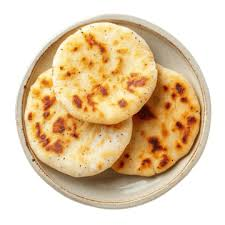

Recipe to make arepas
Arepas are a traditional food in some Latin American countries
, where corn is a primary ingredient in the basic diet.
This dough, made from corn flour, is usually cooked on a
large griddle and is usually prepared to cook batches of
more than one arepa. Venezuelan arepas stand out from
other varieties because their dough is thicker,
which allows them to be filled with a wide variety of
fillings. Although they are usually eaten for breakfast
and their preparation is very simple, do not underestimate
them: arepas can be eaten at any time of the day and,
with a sufficiently powerful filling, they can also
serve as lunch.
Ingredients
precooked corn flour
water
salt
Steps
Pour the water into a bowl, add the teaspoon of salt
and dissolve it. Add the pre-cooked corn flour little by
little. Once you have added it all, knead until you form
a homogeneous dough.
Keep kneading until it is completely integrated. Let
it rest for about 5 minutes and resume kneading. If, after
letting it rest, the dough is very liquid or very dry, add
more flour or water respectively.
Form medium balls with the dough, with this
recipe you will make about 8 arepas. Begin to flatten
them with your palms to make the traditional arepa shape.
They should be at least 1 centimeter thick.
Place a teaspoon of oil on a griddle and spread
it over the entire surface with the help of kitchen
paper. Heat and grill the arepas. Cook over low heat
until you see that they have hardened on one side.
Then, turn them over and let them brown on the other
side.